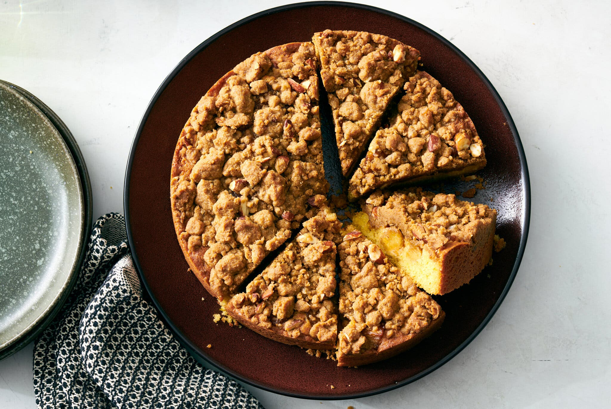
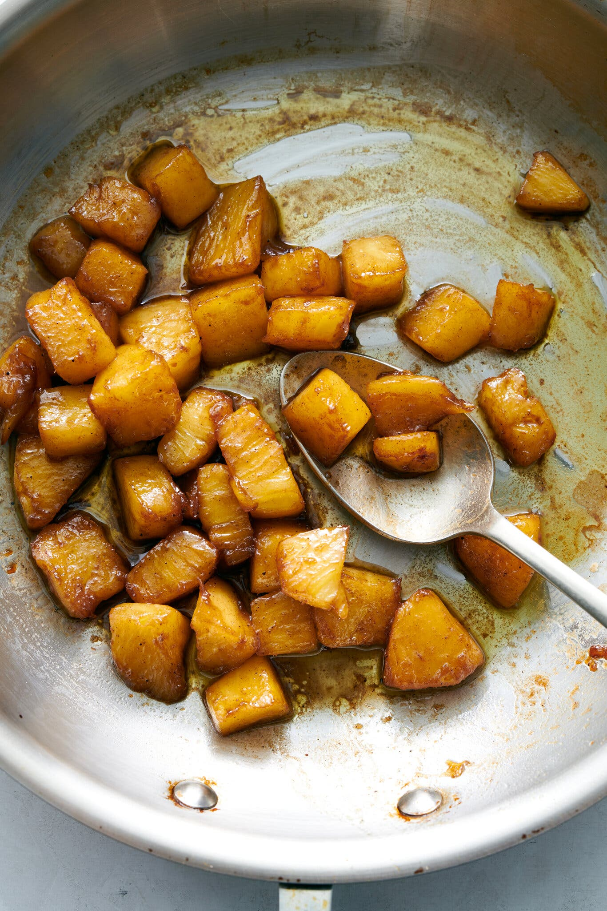
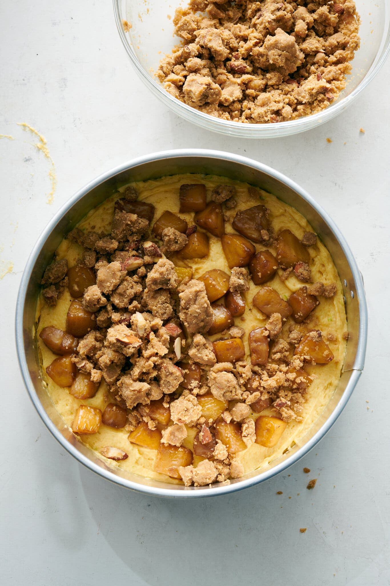
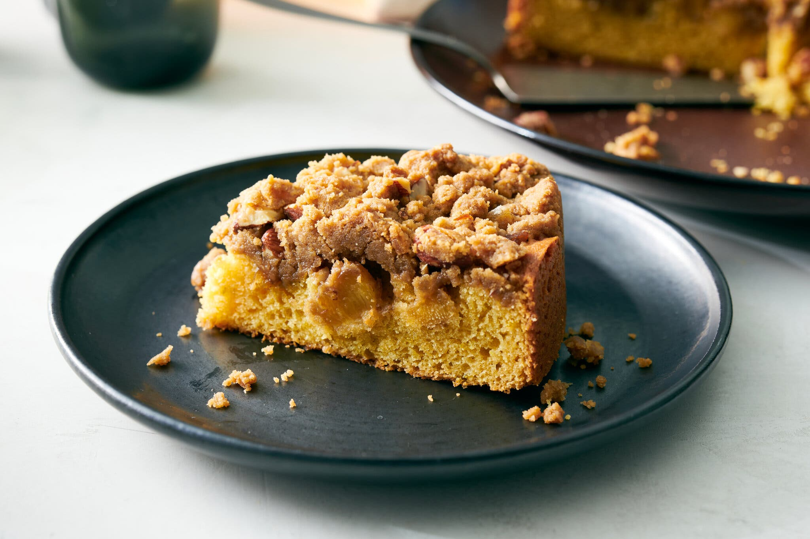

What's the Right Crumb Cake Ratio? This Recipe Tries to Find Out
Melissa Clark argues the secret is in a base layer of cake that's delicious enough to eat on its own.

Most crumb cakes are more about the crumbs than the cake. A thick, nubby topping of cinnamony streusel will make up for any dry blandness underneath, so that bottom layer often ends up seeming like a mere vehicle to bring crumbs to mouth. But a truly great crumb cake — a tender, velvety bed with a blanket of shaggy nuggets on top — achieves harmony, each bite a balanced interplay of spices, butter and sandy brown sugar. I’ve been obsessed with making them ever since I started baking as a kid. My earliest childhood models were cut squares from our local Brooklyn deli, more crumbs than cake. As much as I still adore this iteration, grown-up me thinks crumb cakes are even nicer when the ratio skews toward cake — as long as the cake is good enough to hold its own. The test is, would I devour this cake if there were no crumbs? When the answer is yes, the recipe’s a keeper.


Such is the case with this pineapple-strewn, ginger-crumbed version, which calls for a classic sour cream batter spiked with lime zest and some rum or vanilla to accentuate the fruit.The key to keeping the cake moist is not to overbake it. A toothpick inserted into the center should emerge with a few crumbs clinging to it, not perfectly clean. Another test for doneness is to press the center of the cake lightly with your finger; as soon as it springs back, it’s ready. Since everyone’s oven can be radically different, keep your eye on the cake, especially once the scents of cinnamon, ginger and browning butter make your stomach growl.

To some crumb cake aficionados, the addition of pineapple, or any fruit, is heretical, and, if this is you, feel free to omit it. The richly spiced crumbs flecked with bits of candied ginger and chopped nuts make this cake special enough as it is. But to me, the succulent pockets of pineapple take it to the next level. One thing to note: Although caramelizing the pineapple may seem like overkill for a cake this sweet, it’s essential for the texture, concentrating the juices so the pineapple chunks don’t weep and make the crumbs mushy. Because of its moisture content, pineapple crumb cake doesn’t keep as long as its fruitless counterparts. But it freezes well — on the very off chance there’s any left at all.